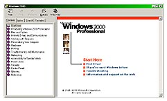

|
TechNook
Packup
Your Presentation
by:
Daisy Tolentino-Binuya
The
PowerPoint Viewer
The PowerPoint
Viewer is a program used to run slide shows on computers
that don't have PowerPoint installed. You can add the Viewer
to the same disk as a presentation by using the Pack and Go
Wizard. Then you can unpack the Viewer and presentation together
and run the slide show on another computer. You can also create
a play list to use with the Viewer so you can run multiple
presentations, one after another.
The Viewer,
which can be freely distributed with no additional license,
comes with PowerPoint and is located in the Office 97 ValuPack
folder on the CD-ROM. If you didn't install PowerPoint from
a CD-ROM and you have access to the World Wide Web, point
to Microsoft on the Web on the Help menu, and then click Free
Stuff.
You can
also download the Viewer and get updates and additional information
from the PowerPoint Web site. On the Help menu, point to Microsoft
on the Web, and then click Product News. The Viewer that comes
with PowerPoint 97 supports all PowerPoint 95 features and
can be used with both PowerPoint for Windows and the Macintosh.
Prepare
a presentation for use on another computer
When you
want to run a slide show on another computer, you can use
the Pack and Go Wizard. The wizard packages together,
on a disk, all the files and fonts used in the presentation.
When you intend to run your show on a computer that doesn't
have PowerPoint installed, it also packages the PowerPoint
Viewer on the disk. You can include linked files as part of
your package, and if you use TrueType fonts, you can include
them as well. If you make changes to your presentation after
you use the Pack and Go Wizard, just run the wizard again
to update it.
Pack
up a presentation for use on another computer
- Open
the presentation you want to save to a disk.
- On the
File menu, click Pack and Go.
- Follow
the instructions in the Pack and Go Wizard.
If prompted,
insert another disk.
Tip:
If you include the Viewer that comes with PowerPoint 97 on
the disk; you'll get full support for new PowerPoint features.
Unpack
a presentation to run on another computer
Before
you can do this procedure, you must have used the Pack and
Go Wizard to package your presentation.
- Insert
the disk you copied the presentation to.
- In
Windows Explorer, go to the drive where the disk is located,
and then double-click Pngsetup.
- Enter
the destination you want to copy the presentation to.
- To
run the slide show, double-click the PowerPoint Viewer -
Ppview32 - and then click the presentation you want to run.
Some
Windows' Tips
by: Leo Magsisi
- For
general Windows help, hold down and release the Windows
key + F1.
-
Save/capture windows screen. To do this, follow these directions:
- Maximize
the window you'd like to capture.
- To
capture the current window, hold down ALT + Print Scrn
at the same time. To capture the entire screen, just
press Print Scrn.
- Open
a new document in MS Word or MS Photo Editor.
- Paste
the screen shot by holding down CTRL and V at the same
time.
- Change
your default font in word
- Open
a Word document.
- Choose
Font from the Format pull-down menu.
- In
the Font dialog box, select the font and size you want
as your default.
- Click
on the Default button at the bottom left corner of the
box.
- When
Word asks if you're sure you want to do this, choose
Yes. You're done.
- Use
this tip to speed up connection time to your ISP.
- Go
to Dial up Networking in My computer.
- Right-click
on My Connection (or whatever you named the shortcut).
- Go
to Properties.
- Click
on the Server Types tab.
- Be
sure the Logon to Network box is unchecked.
- Under
Allowed Network Protocols, be sure only the TCP/IP box
is checked.
|